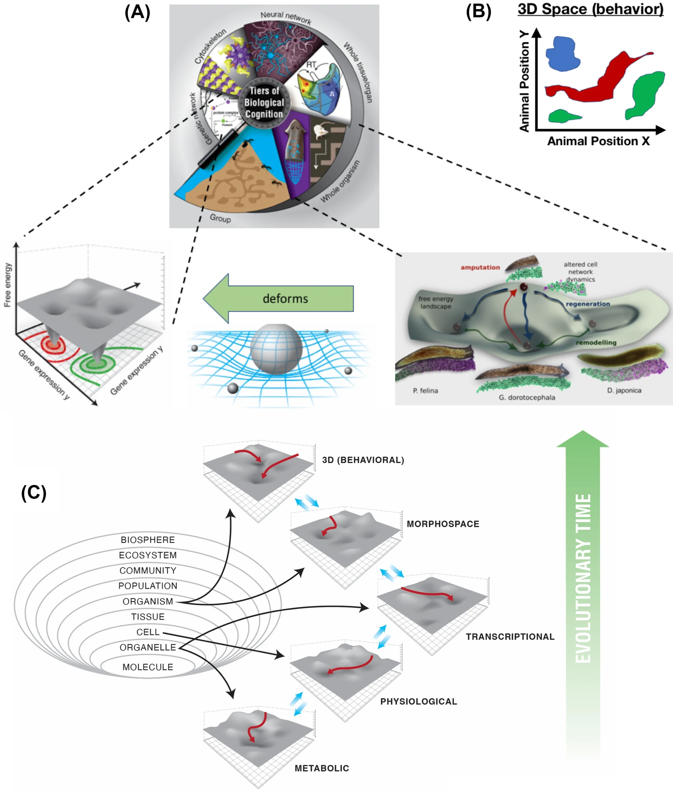

A Relational Universe: Measuring What Connects Us, Avant-Propos
A Relational Universe: Measuring What Connects Us, Avant-Propos
0.1 Abstract
At the core of my research I noticed it to be set upon a simple question: Why do things interact? From the very small to the very large, from particles to planets, molecules to minds, all things seem to exists in relation to other things while at the same time, knowingly or not, holding a relationship with themselves as well. Nothing seems to exists in isolation; thus the intuition is that relation itself appears to be something of the fundamental type. As such, this paper aims to express and articulate some supporting ideas for working parameters prior to attempting a postulate for relational universe hypothesis. Naturally a multidisciplinary effort, this avant-propos requires identifying recurring patterns, from which some candidate relational principles are then proposed, stemming from the perspective shift where interactions may be posed as ontologically primary, yet having a substance-ontology-informed basis, allowing things beyond their traditional classification scope, where substances morph and evolve, through higher-order relationships. This constructive inversion of focus, from substance to relation seems to raise profound and apposite questions in our understanding of the universe, and our place in it.
0.2 Introduction: The Primacy of Relations
Why do all things in the universe can interact with something else? Across scales, the observation that things interact appears to be somewhat of a banality. Ubiquitous, yet puzzling, we seem to lack a formal, and measurable expressions of this relationality aspect of reality, not just how specific things relate in particular contexts, but what relation expresses. Nature seems to choose relation, rather than isolation, as the rule, but why?
0.2.1 Apropos
Definition: Relationality in this context refers to the structured capacity for interaction, encompassing physical, informational, and causal connections across different domains and scales. Encompasses not only direct physical interactions (e.g., chemical bonds) but also informational (e.g., signaling networks), causal (e.g., feedback loops), and even abstract relationships (e.g., analogies across scientific domains).
Contemporary scientific and philosophical frameworks predominantly adopt what Whitehead (1978) termed a “substance ontology”. The implication is that things exist and therefore they may / will relate, whereas the reverse, when relationships are not secondary but primordial, things exist because relation allows the becoming of things into other things and so on. The substance-focused approach has led to significant advances in understanding component properties but could it also carry blind spots in our understanding of domain specific observations and their descriptions, and how they relate to others descriptions across scales?
0.2.2 Motivation
The analytical reductionism that characterizes much of modern science has been said to fragment our understanding (refs to insert), making it difficult to address with rigour ecological concerns at a planetary scale. As Levin argues that inadequate frameworks for understanding relations across scales can limit our governance structures and ethical reasoning about complex systems (Levin (2021)).
Aiming at the inadequacy, it seems that pursuing a bigger picture towards filling this relational-deficit in our perception of reality, does not loom as a mere theoretical curiosity, as the findings may later be expressed usefully in practical resolutions when addressing scales outside of our perceptual range. Even at our scale, we could benefit from those explanations, as our governance practices treat systems separately, and our techno-economical-infrastructural-systems is anchored in narrow proxies (GDP, profit) which are used for accessing system-wide health states, and drive the scaling factors without any tangible and embedded understanding of how things relate from a temporal-causal perspective, neglecting both types of scales, the ones that concern us directly and those beyond our understanding (Holland (1992)) (Debra P. C. Peters and Havstad (2024)). While ignorance is not in scope of this article, as small note on intelligence that echoes the relational-deficit while broadening our field of concern, as Levin (2023) writes, “In fact, all intelligence is collective intelligence—not just termite mounds and beehives. We too are emergent beings supervening on a collection of cells which all were once independent unicellular organisms. How do they work together to enable the creation of a novel being with goals and memories that belong to it and not to any of its parts?”.
 figure source
Some intriguing system properties such as nonlinearity, feedback loops, self-organisation are said to arise from the relationships among components, not from the properties of the components themselves Debra P. C. Peters and Havstad (2024). Systems are often nested Kauffman (1993), Simons (2006), Holland (1992), with each level of organization Atlan (2006) (cells, organs, organisms, societies) being itself a complex system composed of smaller interacting parts illustrate well the challenge of cross-scale mapping/tracking of events. Relational reasoning Gentner, Holyoak, and Kokinov (2001), Halford, Wilson, and Phillips (2010), as the ability to detect similarities and differences in patterns among objects, concepts, and situations, has been stated to be a basic cognitive mechanism that supports understanding of phenomena at both familiar and extreme scales. This suggests that the conceptual resources humans use to reason about small numbers or short time intervals are recycled, in an analogous fashion, to reason about much larger or smaller scales Alexandra Davatzes 2 & Nora S. Newcombe 3 & Thomas F. Shipley3 (2016). However, aligning reasoning across such disparate scales is not trivial: it often requires analogies, progressive alignment, and explicit scaffolding to bridge cognitive gaps Alexandra Davatzes 2 & Nora S. Newcombe 3 & Thomas F. Shipley3 (2016). Luckily, or due to human ingenuity we do seem equipt with some tools to deal with data at a large scale enhancing our human capabilities, and thus have acquired experimental data suggesting that networks of any kind display regular, scale-invariant features, with patterns that persist regardless of the absolute size or level of the system Yara Khaluf and Huepe.
0.3 Theoretical Foundations: Toward a Relational Framework
0.3.1 What Might a Rational, Substance-Ontology-Informed View Reveal About the Universe?
A rational view of the universe, grounded in the well-established tradition of substance ontology, has shaped much of scientific and philosophical inquiry for centuries. Substance1 ontology posits that reality is fundamentally composed of substances: entities that exist independently and possess properties or attributes 2 3. This point-of-view has provided us many foundational knowledge and methods for understanding the persistence of things, and how they change, from where we constructed identity scopes matching our language and signs for those things. Substance theory holds that substances are ontologically independent,they do not require anything else to exist. An intuition is that this rationale has influenced to some degree modern science and it’s technological advancements. While it makes sense that identity-persistence and degrees of independence are sound, for example, when tree remains a tree regardless of whether its leaves change color or fall, its substance (the underlying “tree-ness”) persists through change, which gives us a way to track identity over time, in this case the seasons. But what if instead of seasons, or the full cycle of becoming and perishing of a tree, we want to track causal chains systematically, “allowing-tree” or “allowing tree-ness”, and “allowed-from-tree-ness”? From a substance ontology perspective, the “becoming of” and “allowing for” have been out of scope, because the scope is “tree”. Here trees as objects are modeled as enduring entities subject to forces and interactions, and there it would be contradictory to say that substances are vehicles of those forces within their range of affectation. The point here is to recognize the useful bounds of this the substance-based view, which has supported the development of scientific laws and models by providing a stable ontology. For example, conservation laws (of mass, energy, momentum) presuppose the persistence of substances through transformation. The ability to individuate and classify entities (species, elements, particles) is grounded in the assumption that substances are discrete and stable Altuner (April 2013),
1 In metaphysics, “substance” refers not merely to material stuff, but to any entity that can exist on its own and serve as the bearer of properties.
2 Aristotle’s ontology, for example, makes substance the primary category: “Substance, since it has an independent existence, is the reason for being of all things”.
Today’s open questions and pressing challenges, may be difficult to address or attempt to explain solely in terms of isolated substances, but can we soundly treat change as a phenomena? The proposal is to create a theoretical space where we can look beyond taxonomies, while anchored in what we know, using conservation and physical laws, expanding the existing models of interaction, an if lucky challenge some assumptions and learn something new.
0.3.2 From Objects to Relations: And Relations as Objects
Beginning with Einstein’s relativity and continuing through quantum theory, physics has increasingly moved away from Newtonian notions of absolute space and time toward a panorama where relations between events define reality. Multiple research traditions have approached aspects of relationality, though often in domain-specific contexts, or closely related domains (bio-chem-physical).
The challenge, the pursuit of a general mathematical expression for relational dynamics resembles earlier unification efforts in physics, such as Maxwell’s equations unifying electricity and magnetism, or Einstein’s attempts to create a unified field theory. The difference is that a relational formalism would potentially treat phenomena across traditionally separate domains from a perspective of interactions as a manifestation of relation.
Entertaining this perspective shift, from seeing relationships as properties of things to things emerging 4 from relationships, I wonder about this effect at a quantum scale. I say this timidly, but isn’t the established tha particles cannot be fully described independently of their interactions? There seems to be a worthy of pursuit opportunity here, to explore this parallel with the ecological stance where similarly, organisms cannot be fully described independently of their relationships their ecosystems.
4 I don’t usually like the word “emergence” I ofter try to refrain from “trendy words” and polysemic terms without proper warning, however as a note for later, from a relational perspective emergence may be a stable pattern, even predictable, to some degree of course.
Given my previous work (insert refs) where I proposed that the capacity to affect and be affected, the potential and means of interaction, as a currency of relational dynamics therefore taking terms as affordance from qualitative to quantitative domains, formalizing agency, as mathematical expression that integrate energy flows, morphological constraints, and orders of embedment, I’m expecting to establish from it a continuity in rationale, towards a quantifiable basis for understanding why and how things relate from a general perspective. The aspiration is that this may allow for an deeper understanding, and possible resolution of entanglement paradoxes via ecological interdependence, unearthing novel principles governing connection.
When postulating three principles supporting the basis of this paradigm shift, based on experimental evidence, we had to look into constants and shared patterns showing scale invariance, after all, scale and context-dependent descriptions or how thing relate are varied and detailed. We also seem to require a revision of known paradoxes withing those domain-specific theories, for later analysis in shared resolutions. Furthermore we need to look for where relationships happen: inside and at the border of, implying that studies of how things take shape and make up other things should also. regardless of scale, not contradict the scale invariance patterns found, while simultaneously agreeing with what is known about the subjects in context.
0.4 Methods: Measuring Relationships Across Scales
How can we further explore these vague requirements into the grounds of workable parameters? This effort however preliminary, aims for methods allowing direct comparison of relational dynamics from subject-independent framing.
Consolidating the requirements and ideas from the previous section we have:
A. Scale-Invariance: the mapping of a relational event from a smaller to a larger scale should be reflected through a power law, a pattern / sequence, or any other reasonable orderly quantity.
B. Degrees of Relation: quantifying relations then must comprise spacial and temporal aspects of a thing while, holding it’s relation of becoming and allowing for, while at the same time reflect it’s relation when compared to some other thing.
C. Relations as Causal-Inducers: from the quantities of relation, predictions of co-relation must be attempted and ofc should hold against known behaviours / observations.
An obvious phenomena (is energy exchange a phenomena?) is energy exchange in relational events. Energy, in its myriad forms, seems to serve as both the medium and message of interaction, across scales, offering measurable pathways to operationalise the exploratory working-parameters above (scale-invariance, degrees of relation, and causal induction). Yet, as Richard Feynman famously cautioned, while we can quantify energy, we do not fully grasp its essence. In his lectures, he likened energy to a child’s indestructible blocks: a conserved, abstract quantity that persists through transformations, even as its manifestations (kinetic, thermal, bioelectric) shift in form and context. As we may attempt to “count” the “blocks” meticulously in this postulate, we must remain humble.
The energy or things seems to dictate, shape, persistence and motion. Maupertuis’s 5 formulation suggesting that nature always acts in the most efficient way possible, using the least amount of “action” necessary to achieve a result, focusing on the optimization of a quantity (action) rather than on forces and velocities directly. When applying these concepts beyond physics, similar principles often need to be adapted or reinterpreted. For example, in economics or biology, the “action” might not be a direct measure of energy but could represent a different kind of “cost” or “effort” that is minimized 6. Evidently the exercise in question is to identify a quantity or binding principle that can be expressed to describe the behavior of the system in general. Where interactions as energy exchange-based events seem to be measurable, scale-invariant processes by which systems establish and maintain relationships through asymmetric potential gradients seem far more challenging to reconcile. While the nature of energy eludes definition, its role as a conserved, scale-invariant mediator of interaction seem empirically solid, if we dare, operating as both:
5 Pierre Louis Maupertuis was a French mathematician, philosopher, and astronomer.
6 Such metrics could inform what we call “planetary agreements”, governance frameworks that explicitly recognize the relational nature of human: Earth systems and establish parameters for maintaining beneficial relationships across scales.
A. Medium: The “currency” of interaction (e.g., photons, ATP, gravitational waves). B. Message: Encodes relational information (e.g., voltage patterns guiding morphogenesis, cosmic web filaments encoding dark matter flows).
0.5 4. Conclusion: The Path Forward
Here we have presented some preliminary ideas for further understanding relationships across domains and scales preceding the actual postulate of “The Relational Universe”. The preliminary ideas stand of the argument that relationships if seen as the primary reality from which entities emerge as stable patterns, do not imply a substitution nor invalidate the substance-ontology perspective, but may extend in means and range our current knowledge landscape. Rooted in the expectation that this perspective shift may even opens new approaches to longstanding questions across disciplines, from the nature of complexity to the origins of intelligence, and from planetary governance to ethics, the motivation holds a desire for developing formal expression allowing measurements and predictions of how things relate in general terms without contradicting existing domain specific knowledge. The path forward seems deceptively simple: it requires formalising the how and the why of interaction, and with open mind and childlike curiosity I’ll proceed.
In a universe where everything relates, understanding the nature and dynamics of these relationships becomes not just an intellectual pursuit but a practical necessity. The relational perspective invites us (it has invited me, and therefore by extension you) to see ourselves not as isolated entities but as nodes in a web so vast, our perception may have tricked us to ignore the depth and breath of this cosmic conversation that preceded us and will continue long after we’re gone.